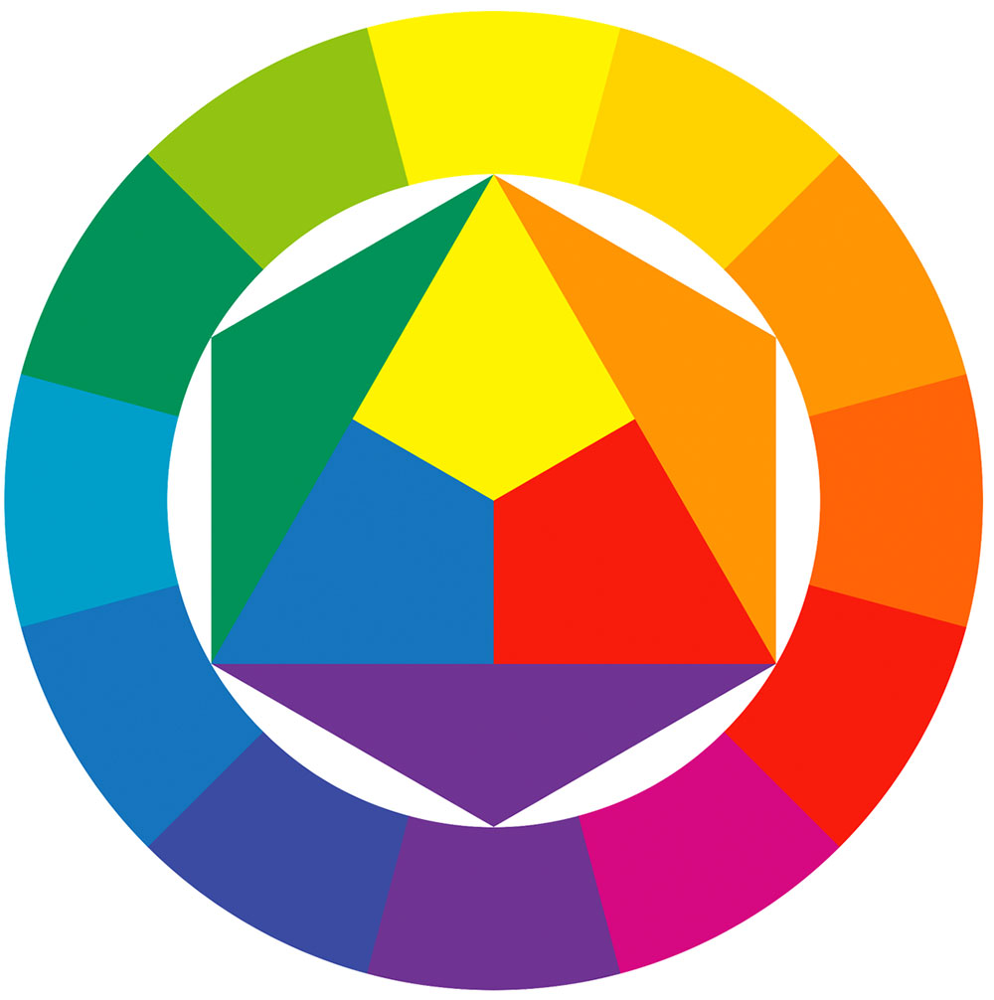
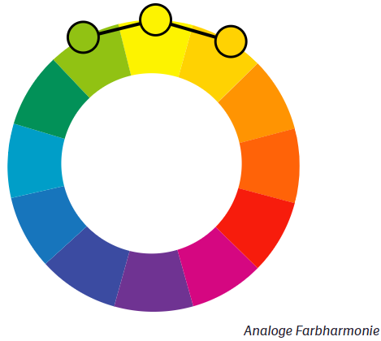

Lernerfolgsbuch
Freitag, 20. Februar 2025
Recherche zum Thema HTML:
- Was ist HTML?
Es ist der Standard zur kreation einer Webseite. HTML beschreibt die Struktur einer Webseite. Es besteht aus einer Reihe von Elementen, welche dem Browser sagen, wie sie den Inhalt anordnen sollen
- Was ist ein Element?
Ein Element ist definiert mit einem Tag - Inhalt - Tag definiert.
- Wie ist die Struktur von HTML
head: dort werden die Meta-Informationen gespeichert.
body: hier wird die Struktur der Webseite definiert. Z.B. headings, paragraph, images, etc.
HTML reagiert nicht sensitiv auf Groß oder Kleinschreibung P ist das selbe wie p.
- Welche Elemente könnten nützlich sein?
- headlines: h1 bis h6
- paragraphs: p
- imgages: img
- Leere Elemente: br oder hr (kreiert eine Linie)
- hyperlink: a
- Was sind Atribute?
Atribute geben dem Element mehr Informationen.
- href: definiert eine URL.
- src: ist klar.
- Kann man einen Text einfärben?
Mit dem Atribut "style"
Heeellloooo
- Kann man einen Text formatieren?
Hierfür gibt es Elemente: z.B.
- Bold text: b
- Strong: strong
- Italic text: i
- Emphasized text: em
- Marked text: mark
- Smaller text: small
- Deleted text: del
- Inserted text: ins
- Subscript text: sub
- Superscript text: sup
- Was sind Inline - und Block-Elemente?
- Block:
Block-Level Elemente starten immer in einer neuen Linie und der Browser fügt automatisch ein bischen Abstand (margin) vor und nach dem Element.
Der Block nimmt immer die volle width ein.

- Inline:
Inline Elemente starten nicht in einer neuen Linie und nehmen nur so viel width ein wie notwendig.

Quellen:
- W3Schools
Donnerstag, 20. Februar 2025
Recherche zum Thema Layout und Whitespace:
GUI Design:
- Welche Rolle spielt das Layout für die Benutzerfreundlichkeit einer GUI?
Sie bestimmen, wie die Inhalte organisiert und den Benutzern präsentiert werden, und lenken deren Blick und Interaktionen innerhalb der Benutzeroberfläche.
Effektive Layouts legen Wert auf Klarheit und Einfachheit und vermeiden ein visuelles Durcheinander, das den Benutzer überwältigen könnte. Sie schaffen eine klare visuelle Hierarchie und lenken die Aufmerksamkeit des Benutzers durch den strategischen Einsatz von Größe, Farbe und Platzierung auf die wichtigsten Informationen.
Konsistenz ist der Schlüssel, um sicherzustellen, dass sich die Benutzer beim Navigieren durch die Benutzeroberfläche wohl und vertraut fühlen.
- Welche Tools kann man für GUI Design verwenden?
Skizzieren und User Flows:
- InVision
- Whimsical
- OmniGraffle Pro
Wireframing:
Beim Wireframing handelt sich der Definition nach um „einen Weg, die grundlegenden Strukturen einer Website zu gestalten. Ein Wireframe wird üblicherweise genutzt, um unter Berücksichtigung der Bedürfnisse der User und User Journeys Inhalte und Funktionen auf einer Seite anzuordnen.
Vereinfacht gesagt erstellt man beim Wireframing einzigartige Looks und skizziert die Funktionen für jeden Schritt des User Flows und deiner Seite oder Anwendung.
- Balsamiq
- Justinmind
- UXPin
Interface Design und Prototyping:
In diesem Schritt werden die erstellten Wireframes und statischen Ebenen mit Übergängen und Auslösern zum Leben erweckt.
Hier testest du dein gesamtes Design und überarbeitest es, falls etwas fehlt oder verbessert werden muss.
- Figma
- Sketch
- Adobe XD
- Wie kann ein gutes Layout die Lesbarkeit und Verständlichkeit von Inhalten verbessern?
- Gestalte Inhalte, die das Scannen vereinfachen:
Strukturiere deine Texte so, dass alle Nutzer schon beim Überfliegen deiner Texte einen guten Zugang und alle für sie relevanten Informationen erhalten.
- Verwende klare (Zwischen-)Überschriften:
Aussagekräftige Überschriften steigern die Neugier deiner Leser und bieten ihnen immer wieder die Möglichkeit, neu in den Text einzusteigen.
- Platziere wichtige Informationen an vorderster Stelle:
Stelle sicher, dass die wichtigsten Informationen weiter oben platziert oder auffälliger gestaltet sind. Durch diese klare Hierarchie fallen sie sofort ins Auge und helfen deinen Lesern dabei, auf deiner Seite zu navigieren.
- Teile deine Inhalte in kleine, klar abgegrenzte Gruppen auf:
Kurze Absätze erleichtern das Verständnis, da dein Text dadurch leichter zu erfassen ist. Gruppiere zusammengehörige Elemente visuell, um ihren Zusammenhang zu verdeutlichen.
- Welche gängigen Layout-Prinzipien gibt es, um eine konsistente und benutzerfreundliche Oberfläche zu gestalten?
Schwerpunkt
Balance und Anordnung
Kontrast
Wiederholung
Proportion
Bewegung
Weißraum
Grid-System:
- Warum wird das 12er-Grid-System häufig im UI-Design verwendet?
Im Responsive Design werden Elemente auf unterschiedlich großen Displays neu positioniert. Das 12er Grid bietet sich an, da es 1, 2, 3, 4, oder 6 Elemente gleicher Größe nebeneinander erlaubt. Nachteilig ist die starke Verbreitung dieses Rasters und der daraus resultierende einheitliche Layoutaufbau im Web.
- Wie kann man das 12er-Grid flexibel für verschiedene Bildschirmgrößen einsetzen?
CSS Grid ist ein mächtiges 2-dimensionales Layout. Das bedeutet, dass es sowohl mit den Zeilen als auch mit den Spalten des Layouts umgehen kann. CSS Grid arbeitet mit einer 12-Grid-Anordnung, bei der der Bildschirm (unsichtbar) in 12 Teile geteilt ist, und Gegenstände müssen in diese Anordnung passen.
- Wie vermeidet man eine ungleichmäßige oder unstrukturierte Anordnung von Elementen im 12er-Grid?
- Verwendung von festen Abständen:
Achte darauf, dass die Abstände zwischen den Elementen konsistent sind. Das bedeutet, dass du entweder feste Margen oder Abstände in Pixeln oder als Prozentsatz definierst, die für alle Elemente im Grid gleich sind.
- Gitterausrichtung:
Stelle sicher, dass die Elemente innerhalb der 12-Spalten-Struktur korrekt ausgerichtet sind. Verwende CSS-Grid- oder Flexbox-Eigenschaften wie justify-items, align-items, oder justify-content, um die Anordnung der Elemente zu steuern.
- Grid-Spalten und -Zeilen optimal nutzen
Im 12er-Grid solltest du die Spalten auf intelligente Weise verteilen. Ein häufiges Vorgehen ist, die Spalten in 12er-Einheiten zu unterteilen, sodass z. B. ein Element 4 Spalten und ein anderes 8 Spalten einnimmt. Dies sorgt für eine ausgewogene Anordnung und vermeidet leere Räume oder ungenutzte Spalten.
- Responsive Design:
Achte darauf, dass das Layout bei verschiedenen Bildschirmgrößen gut funktioniert. Nutze Media Queries, um die Spaltenanzahl anzupassen und so eine gleichmäßige Verteilung der Elemente zu gewährleisten.
- Vermeidung von Überlappungen:
Wenn du komplexe Layouts erstellst, stelle sicher, dass sich die Elemente nicht überlappen. Dies lässt sich durch die ordnungsgemäße Festlegung von grid-column und grid-row (im Falle von CSS Grid) oder durch ein flexibles Layout mit flexbox vermeiden.
- Harmonische Reihenfolge
Die Reihenfolge der Elemente im Grid sollte logisch und visuell angenehm sein. Oft hilft es, die Elemente nach ihrer Wichtigkeit zu ordnen, sodass sie in einer klaren, strukturierten Reihenfolge erscheinen, was die Lesbarkeit und Benutzererfahrung verbessert.
- Verwendung von Platzhaltern:
Bei der Gestaltung von Inhalten im 12er-Grid kannst du mit Platzhaltern arbeiten, um sicherzustellen, dass du jede Zelle optimal nutzt und leere Bereiche minimierst. Platzhalter können auch dazu beitragen, das Layout auszugleichen, wenn ein Element in einer bestimmten Zelle nicht benötigt wird.
Spacing & Whitespace:
- Warum ist ausreichend Abstand zwischen UI-Elementen wichtig?
Die Abstände im UI-Design sind entscheidend für visuelle Klarheit und Benutzererfahrung. Sie gruppieren Elemente nach Nähe und schaffen visuelle Hierarchien und Beziehungen, die Benutzer zu wichtigen Inhalten führen . Einheitliche Abstandsmuster verbessern die Lesbarkeit und reduzieren die Augenbelastung, indem sie erholsamen Leerraum bieten.
- Wie kann White Space gezielt eingesetzt werden, um Inhalte lesbarer und übersichtlicher zu machen?
Whitespace, auch als negativer Raum bekannt, ist der Bereich zwischen Designelementen. Er ist der Atem in einem Layout, die Pause in einer visuellen Komposition.
- Makro- vs. Mikro-Whitespace:
Makro-Whitespace bezieht sich auf die großen Leerräume zwischen Hauptelementen, während Mikro-Whitespace die kleinen Abstände zwischen Buchstaben oder Zeilen meint. Beide sind wichtig für ein ausgewogenes Design. Ein gutes Zusammenspiel von Makro- und Mikro-Whitespace kann die Lesbarkeit und das visuelle Erlebnis erheblich verbessern.
- Goldener Schnitt und andere Proportionsregeln:
Diese klassischen Designprinzipien können helfen, Whitespace harmonisch zu verteilen. Der Goldene Schnitt, ein Verhältnis von ungefähr 1:1,618, wird oft als besonders ästhetisch empfunden und kann als Leitlinie für die Verteilung von Whitespace dienen.
- Typografie und Whitespace:
Die richtige Zeilenhöhe und Buchstabenabstände können die Lesbarkeit drastisch verbessern. Ein guter Richtwert für die Zeilenhöhe ist 130-150% der Schriftgröße. Bei den Buchstabenabständen gilt: Je größer die Schrift, desto enger sollten die Abstände sein.
- Farbwahl und Whitespace:
Auch farbige Flächen können als Whitespace fungieren. Die Wahl der Farben beeinflusst, wie der Leerraum wahrgenommen wird. Helle, neutrale Farben können einen ähnlichen Effekt wie weißer Raum haben, während kräftige Farben als aktive Elemente wahrgenommen werden können.
- Welche Methoden gibt es, um eine visuelle Trennung von Elementen zu erreichen, ohne das Layout überladen wirken zu lassen?
Unterschiedliche Hintergrundfarben
Feine Linien oder Rahmen
Schattierungen und Schatten
Unterschiedliche Schriftgrößen oder -stile
Abstände (Whitespace)
Gruppierung & Näheprinzip:
- Welche Rolle spielen Farben, Rahmen und Abstände bei der Gruppierung von UI-Elementen?
Das Gefühl von Ordnung auszulösen.
Barrierefreiheit
- Wie kann das Näheprinzip helfen, die Benutzerführung zu verbessern?
- Klarheit durch Gruppierung
Elemente, die visuell nahe beieinander platziert werden, werden vom Benutzer als zusammengehörig wahrgenommen. Indem man verwandte Inhalte oder Funktionen nah beieinander anordnet (z.B. Navigationselemente oder Optionen, die zueinander gehören), wird dem Benutzer schnell klar, welche Elemente zusammengehören. Das reduziert die kognitive Belastung, da der Benutzer nicht lange nach Zusammenhängen suchen muss.
- Erhöhte Benutzerfreundlichkeit:
Wenn verwandte Aktionen oder Informationen in einer bestimmten Nähe zueinander angeordnet sind, kann der Benutzer schneller und einfacher darauf zugreifen, ohne unnötig weit zu scrollen oder zwischen verschiedenen Bereichen zu wechseln. Zum Beispiel: Alle Optionen zur Kontoverwaltung sollten nah beieinander liegen, um dem Benutzer eine einfache Navigation zu ermöglichen.
- Reduzierung der Verwirrung
Wenn Elemente, die nicht miteinander in Verbindung stehen, unnötig nahe beieinander liegen, kann dies zu Verwirrung führen. Das Näheprinzip hilft, diese Probleme zu vermeiden, indem es eine klare Trennung zwischen unterschiedlichen Informationsgruppen und Funktionen schafft.
- Fokus und Priorisierung:
Durch die gezielte Anordnung von Elementen nach ihrer Wichtigkeit (z.B. die wichtigsten Funktionen oder Informationen werden visuell zusammengefasst) kann der Benutzer durch die Benutzeroberfläche geleitet werden, ohne dass er sich verloren fühlt. Das hilft auch, den Fokus des Benutzers zu lenken und die Aufmerksamkeit auf die entscheidenden Elemente zu lenken.
- Visuelle Hierarchie:
Das Näheprinzip kann eine visuelle Hierarchie erzeugen, indem verwandte Inhalte und Aktionen nebeneinander platziert werden. Dies erleichtert die Orientierung und hilft dem Benutzer, schneller zu verstehen, wie er mit der Benutzeroberfläche interagieren kann.
Visuelle Balance & Gewichtung:
- Wie kann eine ausgeglichene Verteilung von Elementen in einem UI-Layout erreicht werden?
Verwendung von Rastern und Spalten (Grid-System)
Whitespace (Leerraum)
Symmetrie und Asymmetrie
Visuelle Gewichtung und Hierarchie
Flexibles Layout und Proportionale Größen
Zentralisierung wichtiger Inhalte
Spaced Alignment
Farbkontraste und -gewichtung
Responsives Design
- Wie kann man vermeiden, dass eine Seite zu „schwer“ oder „unausgewogen“ wirkt?
Abstände zeischen Abschnitte sind wichtig.
Hintergrundfarbe des Absxhnitts und Seitenrythmus.
Teiler - eine Trennlinie in Form einer Linie oder eines Rahmens
Größe und Farbe des Abschnittitels.
Kompatiblität der Blöcke

Visuelle Führung & Strukturierung:
- Welche Faktoren beeinflussen die visuelle Hierarchie in einem UI?
Je größer, desto wichtiger.
Helligkeit = Sichtbarkeit.
Engerer Abstand = näher in der Bedeutung
Scanning & Nutzerführung:
- Wie verläuft die natürliche Blickführung der Nutzer auf einer Webseite oder App?
- Welche gängigen Blickmuster (z. B. F-Muster, Z-Muster) gibt es und wann werden sie eingesetzt?

- Wie kann die Blickführung gezielt gesteuert werden, um die wichtigsten Inhalte hervorzuheben?
Verschwende keinen zweiten Blick – oder ersten, oder dritten
F-Pattern & Co. – der richtige Blick für jede Website
Schau mir in die Augen! Oder nicht?
Above the Fold, das heißt der Bereich der Seite, der sichtbar ist, bevor weitergescrollt wird ist von besonderer Bedeutung für Nutzer:innen und wird intensiver als der Rest der Seite „beäugt“.
Banner-Blindheit: Spiele Banner-Werbung an geeigneten Stellen der Customer Journey aus. Gestalte die Banner so, dass sie mit dem Design der restlichen Website verschmelzen.

Quellen:
- Layout
- Tools
- Lesbarkeit
- Designprinzipien
- 12er-Grid
- CSS Grid
- ChatGPT
- ABstand UI
- Whitespace
- Layout
- F/Z-Muster
Moodboard in Canvas erstellt.
.png)

Folgende Farben wurde für das erste Moodboard (links) verwendet:
- Hintergrund: #241b1a
- Schriftfarbe: #ffffff
Folgene Fonts wurden verwendet:
- Babas Neue
- Monsterrat
Folgende Farben wurde für das zweite Moodboard (rechts) verwendet:
- Hintergrund: #dbd29b
- Window: #e0b675
- Schrift: #4c5161
Folgene Fonts wurden verwendet:
- Arcade Gamer
- Megapixel
Mittwoch, 19. Februar 2025
Recherche zum Thema Typografie und Farbtheorie:
Moodboard:
- Was ist ein Moodboard?
Ein Moodboard ist eine visuelle Darstellung von Konzepten und Ideen, die mithilfe einer Anordnung von Bildern, Text und anderen Designmaterialien erstellt wird. Die Absicht hinter der Erstellung eines Moodboards ist es, einen bestimmten Stil oder eine bestimmte Stimmung eines Projekts hervorzurufen oder darzustellen. Manche Menschen betrachten ein Moodboard als eine Collage kleinerer Ideen, die zu einem größeren Konzept beitragen.
- Wie erstellt man ein Moodboard?
Kann digital oder auf dem Papier gemacht werden.
Brainstorming & Zielsetzung: Soll es helfen, die Farbpalette für ein neues Büro zu bestimmen oder die Markenidentität eines Unternehmens zu visualisieren?
Recherche und Sammlung von Inspiration: Nach dem Brainstorming beginnt die Recherche und Sammlung von Inspiration aus verschiedenen Quellen wie Online-Galerien, Blogs, Magazinen oder eigenen Fotos. Diese Elemente können Bilder, Farbpaletten, Texturen, Schriftarten und andere visuelle Elemente umfassen, die die gewünschte Stimmung oder Ästhetik des Moodboards widerspiegeln.
Hinzufügen und Anordnen der Elemente: Arbeite daran, die besten Layouts und Kompositionen zu finden, die die gewünschte Atmosphäre, Botschaft oder das Designkonzept am besten vermitteln. Experimentiere mit verschiedenen Anordnungen, bis du mit dem Ergebnis zufrieden bist.
Anpassung von Farben und Stilen: Nachdem die Elemente angeordnet sind, passe bei Bedarf Farben, Schriftarten und Stile an, um das Moodboard konsistent und ansprechend zu gestalten. Dies kann das Hervorheben bestimmter Elemente, das Ändern von Farbpaletten oder das Anpassen von Schriftarten umfassen, um die visuelle Kohärenz zu verbessern.
Feinschliff: Im Feinschliff überprüfst und verfeinerst du die Details, um sicherzustellen, dass das Moodboard vollständig ist und die gewünschte Botschaft klar vermittelt. Achte auf die Anordnung der Elemente, korrigiere eventuelle Fehler und optimiere das Design für eine optimale visuelle Wirkung.
Typografie:
- Was sind die wichtigsten Prinzipien der Typografie im Webdesign?
Gestaltungsräume: Inhalte nach Informationsgehalt strukturieren.
Schriftart: Welche Schrift hat das passende Profil für mein Projekt?
Anzahl der Schriftarten: Weniger ist mehr
Schriftkombination: Gegensätze ziehen sich an
Schriftgrößen: Doppelt hält besser
Anzahl der Schriftgrößen: durch Reduktion zu typografischer Klarheit
Schriftauszeichnung: Regular, halbfett, fett oder extrafett
Schriftausrichtung
Zeilenabstand: Genügend Abstand zu halten, verhindert Satzunfälle
Zeilenlänge
- Welche Unterschiede gibt es zwischen Serif- und Sans-Serif-Schriften, und wann sollte man welche verwenden?
Serif ist eine große Kategorie von Schriften, die wiederum in Unterkategorien unterteilt ist. Grundsätzlich gibt es vier Arten von Serifenschriften: Old-Style, Transitional, New-Style und Slab Serifs. Sie unterscheiden sich durch die Form der Serifen, den Kontrast und die Neigung der Ovale.
Sans Serif solltest du sowohl die Leserlichkeit als auch die Symbolik und die historischen Hintergründe der gewählten Schriftart berücksichtigen. Serifen und serifenlose Schrift: Wirkung und Ästhetik. Serifenschriften können Autorität, Professionalität und Erfahrung vermitteln.
 im
im
- Warum ist eine Hierarchie in der Typografie wichtig, und wie kann sie effektiv umgesetzt werden?
Mit einer Typographischen Hierarchie bestimmst du, wie die Nutzer die Informationen auf deiner Website aufnehmen, verarbeiten und behalten.
Du kannst die Typographische Hierarchie als ein Konzept des Graphikdesigns verstehen. Es hilft dir dabei, alle Informationen in deinem Design zu organisieren, sodass es für deine Nutzer leichter wird, die Bestandteile deines Textes nach Wichtigkeit zu identifizieren und zu verstehen. Mit dieser Anordnung hast du einen großen Einfluss auf das, was vom Leser wahrgenommen wird.
Folgende Faktoren eines Textes sind dafür ausschlaggebend:Schriftart, Schriftgröße, Schriftfarbe, Schriftschnitt, Platzierung von Absätzen, Zeilenabstand
- Wie können Webdesigner sicherstellen, dass ihre Typografie den WCAG-Richtlinien für Barrierefreiheit entspricht?
Die Web Content Accessibility Guidelines (WCAG) erklären, wie man Webinhalte zugänglich macht für Menschen mit Behinderung.
Auswahl geeigneter Farbkontraste: Achte darauf, dass der Kontrast zwischen Text und Hintergrund ausreichend ist. Ein hoher Kontrast verbessert die Lesbarkeit für Benutzer mit Sehbehinderungen. Nutze Tools wie den Contrast Checker, um die Konformität mit den WCAG-Richtlinien sicherzustellen.
Farbqualität:
- Wie beeinflussen die Prinzipien der Farbharmonie (z. B. Komplementär-, Analog-, Triadenfarben) das Webdesign?
Farbharmonie ist die Kombination von Farben, die ein ästhetisch ansprechendes und ausgewogenes Design schaffen. Sie ermöglicht es, mit Farben ein Gefühl von Ordnung, Einheit und Ausgewogenheit in deinen Designs zu schaffen. Farbharmonien basieren auf den Grundsätzen der Farbtheorie, die besagt, dass bestimmte Farbkombinationen eine angenehme Wirkung erzeugen. So erzeugen beispielsweise Komplementärfarben wie Blau und Orange eine lebendige und auffällige Wirkung.
Um Farbharmonien zu definieren, braucht es einen Farbkreis als Grundlage. In der Farbtheorie gibt es zahlreiche Ansätze und Definitionen. In der praktischen Gestaltung wird aber meistens/gerne auf den bekannten Farbkreis von Johannes Itten zurückgegriffen, da er das Zusammenwirken der Farben und der daraus entstehenden Farbkontraste beachtet hat.

Eine analoge Farbharmonie besteht aus Farben, die auf dem Farbkreis nebeneinander stehen. Diese Farben haben ähnliche Tonwerte und sind harmonisch miteinander verbunden. Eine Analog-Farbharmonie kann warm oder kühl sein, abhängig von der Lage der Farben auf dem Farbkreis. Dadurch entsteht eine ausgewogene, aber dennoch visuell anregende Kombination. Analoge Farbschema kommen häufig in der Natur vor, wie z. B. der Farbverlauf eines Sonnenuntergangs, und können verwendet werden, um im Webdesign ein Gefühl von Harmonie und Ausgewogenheit zu schaffen.

Beispiele:
- Blau und Grün – Diese Kombination ruft ein Gefühl der Ruhe hervor und wird häufig auf Websites mit Bezug zur Natur verwendet.
- Rot und Orange – Diese Kombination kann verwendet werden, um lebendige und energiegeladene Designs zu erstellen, die die Aufmerksamkeit auf sich ziehen.
- Gelb und Grün – Diese Kombination wird mit Harmonie und Ausgeglichenheit assoziiert und ist daher eine gute Wahl für Designs, die ein beruhigendes und entspanntes Gefühl vermitteln sollen.
Anwendung von Farben:
- Welche Tools und Ressourcen (z. B. Adobe Color, Coolors, Material Design Palette) sind am besten zur Farbauswahl geeignet?
Farb-Tools sind digitale Werkzeuge, die dich bei der Auswahl, Gestaltung und Analyse von Farben unterstützen. Sie helfen dir, harmonische Farbpaletten zu erstellen, inspirierende Farbverläufe zu gestalten und Farben auf Barrierefreiheit zu prüfen.
Tools:
- Farbauswahl: ColorHexa und Colormind bieten umfangreiche Funktionen zur Erstellung von Farbpaletten, von Farbschemata bis zu Farbblindheitssimulationen.
- Farbverläufe: CSS Gradient oder GradPad kannst du spielend einfach Farbverläufe gestalten, inklusive direkter CSS-Code-Generierung.
- Fertige Paletten: Color Hunt oder Design Seeds bieten eine riesige Auswahl an fertigen Farbpaletten
Technische Aspekte:
- Was sind die Unterschiede zwischen Systemschriften, Web-Safe Fonts und Web Fonts?
- Wie funktionieren Schriftformate wie TTF, OTF, WOFF und WOFF2, und welche sind am besten für das Web geeignet?
Die breiteste Unterstützung bieten die beiden Formate TTF (TrueType Format) und OTF (OpenType Format). WOFF (Web Open Font Format), EOT (Embedded OpenType)

- Welche Vor- und Nachteile haben Google Fonts und selbst gehostete Schriftarten?
Eine Schriftart (Font) ist eine spezifische Gestaltung von Buchstaben, Zahlen und Symbolen. Eine Schriftfamilie (Typeface) umfasst mehrere Schriftarten, die gemeinsam gestaltet wurden und zusammenpassen. Innerhalb einer Schriftfamilie gibt es verschiedene Stile (Styles), wie Regular, Bold, Italic und Light.
Über 1.000 Schriftarten bietet der Suchmaschinenriese inzwischen an. Die Schriften kommen von verschiedenen Designern und sind sogenannte Open-Source-Fonts (d.h. mehr oder weniger frei benutzbar).
Google hostet die Schriften selber (also sie liegen sozusagen bei Google auf dem Server) und werden von dort geladen.
Vorteile:
- optisch ansprechendere Webseiten & Apps
- Erscheinungsbild der Webseite ist auf jedem Endgerät gleich
- Ladezeit wird reduziert
- Schriften können auch für andere Programme verwendet werden
- Anzahl & Auswahl wächst stetig
- Sind frei und kommerziell nutzbar
Nachteile:
- müssen in der Datenschutzerklärung erwähnt werden, wenn sie nicht lokal eingebunden sind
- müssen upgedatet werden
- Abrufe der Schrift werden von Google erfasst
- Wie beeinflussen verschiedene Display-Technologien (OLED, LCD) und Farbräume (sRGB, AdobeRGB) die Farbdarstellung im Web?
sRGB ist der am weitesten verbreitete RGB-Farbraum und wird von den meisten Monitoren, Druckern und digitalen Kameras verwendet. Er wurde von HP und Microsoft in den 1990er Jahren entwickelt, um einen Standard für die Farbdarstellung im Internet und auf verschiedenen Geräten zu schaffen.
Eigenschaften:
- Gamut (Farbraumumfang): Relativ klein im Vergleich zu anderen RGB-Farbräumen, deckt aber den Großteil der Farben ab, die auf Standardmonitoren angezeigt werden können.
- Anwendungsbereich: Ideal für Webgrafiken, allgemeine Fotografie und Druckanwendungen, bei denen eine konsistente Farbdarstellung auf verschiedenen Geräten wichtig ist.
- Kalibrierung: Einfach zu kalibrieren und weitgehend unterstützt.
- Schwäche: Insbesondere im Cyan-Bereich ist sRGB deutlich kleiner als der klassische CMYK-Farbraum ISOCoatedV2. Das blaueste Cyan in sRGB liegt bei rund 80% Cyan in ISOCoatedV2.
Adobe RGB wurde 1998 von Adobe Systems entwickelt, um einen größeren Farbraum abzudecken, insbesondere im Bereich der Druckvorstufe und professionellen Fotografie. Dieser Farbraum umfasst mehr grüne und blaue Farbtöne als sRGB.
Eigenschaften:
- Gamut: Größer als sRGB, besonders im grünen und cyanfarbenen Bereich.
- Anwendungsbereich: Wird häufig in der professionellen Fotografie und im Grafikdesign verwendet, wo es auf eine präzise Farbwiedergabe ankommt. Gerade moderne Kameras bieten statt sRGB auch AdobeRGB als alternativen Farbraum an, um Bilder direkt in AdobeRGB auf die SD-Karte zu speichern.
- Kalibrierung: Erfordert eine sorgfältige Kalibrierung und geeignete Ausgabegeräte, um den erweiterten Farbraum vollständig nutzen zu können.
- Wie funktioniert das Farbmanagement in CSS, und was sind die Unterschiede zwischen HEX, RGB, HSL und LAB?
CSS kennt in seinem Standard bestimmte Namen, die dann in Farben umgewandelt werden. Da die Farbnamen nativ von CSS unterstützt werden, konnte es (zumindest früher) sein, dass diese potenziell performanter waren als RGB- oder HSL-Werte. Dabei ging es aber immer nur um einen minimalen Vorteil, also nichts von allzu großer Bedeutung.
Bei Hex-Farben bleibt das System ebenfalls Rot, Grün, Blau. Es wird aber umgewandelt. Statt Base16 kommt Base10 zum Einsatz, was bedeutet, dass »250« zu »FA« wird. Das Ganze ist sehr verwirrend, nicht unbedingt logisch für den Betrachter und daher auch nicht einfach so aus dem Kopf zu erstellen. Hexwerte entstehen also nicht in einem kreativen Prozess, sondern weil sie gebraucht werden und möglichst kurz sind.
Mit den RGB-Werten steuern wir das rote, grüne und blaue Licht. Mit RGBA fügen wir dem Ganzen zudem einen Alphakanal, also Transparenz hinzu.
HSL steht dabei für Hue, Saturation und Lightness. Also Farbton, Sättigung und Helligkeit. Der Farbton (0 bis 360) beschreibt die Farbe. Die Sättigung (0 bis 100) gibt an, wie intensiv diese Farbe dargestellt wird. Und die Helligkeit legt fest, wie dunkel oder hell der Farbton am Ende ausgegeben wird.
Lab repräsentiert das gesamte Spektrum der Farben, die Menschen sehen können, indem es die Helligkeit der Farbe, einen Rot/Grün-Achsenwert, einen Blau/Gelb-Achsenwert und einen optionalen Alphatransparenzwert angibt.
Quelle:
- Moodboard
- typografie
- Serif
- WCAG
- WCAG Prinzip
- Farbharmonie
- Schriftformate
- google fonts
- RGB
- CSS Farbe
- CSS LAB
Persona.
Dienstag, 18. Februar 2025
Recherche zum Thema Personas
- Was ist eine Persona?
Personas veranschaulichen typische Vertreter einer Zielgruppe. Sie haben Erwartungen, Werte, Wünsche und Ziele und zeigen menschliche Verhaltensweisen. Eine Persona ist die Personifizierung bzw. der Prototyp einer Zielgruppe und hilft dabei, Annahmen über Kunden zu treffen.
Obwohl personas fiktiv sind, handelt es sich dabei um spezifische und konkrete Darstellungen potenzieller Benutzer, die auf Studien basieren, die es uns ermöglichen, das Verhalten und die Motivationen realer Menschen zu beobachten und zu erfassen.
Die Idee der Personas stammt von dem Software-Entwickler Alan Cooper aufgrund der Unzufriedenheit der Benutzerfreundlichkeit 1980.
- Wie könnte eine Persona aussehen?

- Wofür brauchen wir eine Persona?
Für Unternehmen ist es oft schwierig, den Markt und den Bedarf vorauszusehen. Meist ist es auch schwierig, Kunden bei der Verwendung von Produkten zu beobachten und ihre Eindrücke und Wünsche in Erfahrung zu bringen. Hier kann das Persona-Konzept helfen.
- Wofür braucht ein Software Entwickler eine Persona.
Hilfe beim Definieren, wie die Anwendung aussehen soll und wie sie sich verhalten wird.
Da sie echten Menschen ähneln und eine gemeinsame Sprache verwenden, erleichtern sie das Verständnis des Benutzerverhaltens.
Personas können in der frühen und mittleren Phase des Softwareentwicklungsprozesses als Bewertungsinstrument eingesetzt werden und zu einem effizienten Design beitragen.
Personas sind aufgrund ihrer Eigenschaften eine gute Möglichkeit, neben der Entwicklung auch andere Abteilungen einzubeziehen. Marketingfälle oder Management und Vertrieb.
- Was könnten Eigenschaften von Personas sein?
„Realistische“ Vor- und Nachnamen Demografische Eigenschaften wie Alter, Geschlecht, Wohnort/Region, Bildung, Beruf, Position, Familienstand, Einkommen etc. Foto Hobbies, Interessen und Skills Gefühle, Einstellungen und Erwartungen, aber auch Herausforderungen und Frustrationen Interaktionen mit anderen Menschen, Produkten und Dienstleistungen, gegebenenfalls auch mit anderen Personas.
- Was könnte eine schlechte Persona sein?
Dies ist ein Beispiel einer schlechten Persona, da man sicch darunter mehrere Personen vorstellen kann (Prince Charles und Ozzy Osbourne).

Quellen:
- Geschichte
- Software Entwickler und Personas
Recherche zum Thema "Git"
- Welche Befehle brauche ich?
Mit dem Befehl "git clone" wird ein lokales Repositori erstellt als auch eine Verbindung zwischen dem lokalen und dem remote Repositori hergestellt.
Mit dem Befehl "git pull" werden Änderungen vom remote Repositori heruntergeladen.
Mit dem Befehl "git status" werden alle veränderten Dateien angezeigt.
Mit dem Befehl "git add" kann man eine Datei auswählen, deren Änderung in das Repositori überführt werden soll.
Mit dem Befehl "git commit" erfasst man einen Snapshot der aktuell bereitgestellten Änderungen des Projekts.
Mit dem Befehl "git push" werden Änderungen an das remote Repositori übertragen.


- Was sind Branches?
Es ist üblich, bei der Enwicklung eines neuen Features einen Feature-Branch zu erstellen.
Das direkte "Commiten" oder "Pushen" wird nicht verwendet, da 1. immer eine vollständige funktionierende Version im master-Branch liegen soll und 2. man mehrere Branches zu einem Feature erstellen kann um zu testen, was besser umsetzbar ist.
Branches können lokal erstellt und daraufhin remote in das Repositori übertragen werden, aber auch direkt remote.
- Was ist der Master?
Wenn eine Änderung per Commit in das remote Repositori übertragen wurde, ist sie noch nicht in der Hauptfassung des Codes, also in den master-Branch.
Bevor mit dem Merge anfangen kann, muss man einen Merg request erstellen. Damit fragt man an, die eigene Branch in den Master zu "mergen".
- Was ist ein Mergekonflikt?
Konflikte entstehen in der Regel dann, wenn zwei Personen dieselben Zeilen in einer Datei geändert haben oder ein Entwickler eine Datei löscht, während ein anderer Entwickler diese ändert. In diesen Fällen kann Git nicht automatisch entscheiden, welcher Vorgang richtig ist. Die Konflikte betreffen nur den Entwickler, der den Merge durchführt – der Rest des Teams bemerkt von dem Konflikt nichts. Git kennzeichnet die betreffende Datei als "in Konflikt stehend" und stoppt den Merge-Vorgang. Es ist dann Aufgabe des Entwicklers, den Konflikt zu lösen.

Quellen:
- Git
- Mergekonflikt
Montag, 17. Februar 2025
Recherche zum Thema "Git"

- Was ist Git?
Git ist eine Versionsverwaltungsoftware dass das efiziente Arbeiten an einem Softwarecode ermöglicht. Änderungen von Teammitgliedern können nachvollzogen, analysiert und gegebenenfalls rückgängig gemacht werden.
Der Quellcode wird in Repositories gespeichert welche lokal (nur auf diesem Computer verfügbar) oder remote (Online-Speicher, Kopie ist lokal) sein kann.
- Was ist eine VCS?
Versionsverwaltungsoftwares erlaubt es Änderungen in Dateien zu verfolgen und aufzuzeichnen (Versionskontrolle). Wiederherstellen, vergleichen und Zusammenführen von Projekten ist möglich.
- Was ist GitHub
GitHub ist eine cloudbasierte Plattform, auf welchem der Code gespeichert, geteilt und mit anderen zusammengearbeitet werden kann.

- Wie kann ich Git in VSCode verwenden
Git herunterladen und installieren. Git Graph in VSCode herunterladen.
Folgende Befehle im Terminal in VSCode ausführen: 1: config --global user.name "" 2: config --global user.email ""
Es ist nützlich, da man ganz einfach Änderungen hochladen und für das Team direkt verfügbar machen kann.
Quelle:
- Git
- GitHub Docs
Recherche zum Thema "UX/UI":
- Was ist UI/UX?
User Experience bezeichnet die gesamte Erfahrung, die ein Benutzer mit einem Produkt oder einer Dienstleistung macht. Es geht darum, wie der Nutzer das Produkt wahrnimmt und wie er mit ihm interagiert. UX-Design umfasst die Gestaltung von Prozessen, die dafür sorgen, dass der Benutzer die Interaktion als angenehm, effizient und sinnvoll empfindet. Das UX-Design konzentriert sich mehr auf die allgemeine Benutzererfahrung.
User Interface bezieht sich auf das visuelle Design und die Interaktive Gestaltung eines Produkts, also die Elemente, mit denen der Benutzer direkt interagiert. Dazu gehören beispielsweise Buttons, Menüs, Farben, Schriftarten, Icons und Layouts. UI-Design kümmert sich darum, dass diese Elemente ästhetisch ansprechend und funktional sind.
UX: Nutzerforschung, Benutzerfreundlichkeit, Interaktion und Navigation, Zielerreichung
UI: Visuelle Gestaltung, Interaktive Elemente, Konsistenz, Zugänglichkeit
1993 prägte Don Norman den Begriff „User Experience“ für seine Gruppe bei Apple Computer
- Wie sieht ein UI/UX Design aus?
UX-Phase (Forschung und Planung), UI-Phase (Visuelle Gestaltung), Testphase
- Do‘s and dont‘s in UI/UX Design.
Do’s: Halte es simpel, Responsive Webdesign, Konsistenz im Design.
Dont’s: Überladenes UI/UX Design, Uneinheitliches UI/UX Design, Ignorieren von Nutzerbedürfnissen, Langes Laden der Website, Fehlendes Responsive Webdesign, Optimierung für Touch-Geräte, nicht auf Trends verlassen, zu viele Fonts und Farben verwenden.
- Wie betrifft UI/UX Design uns als Entwickler?
Ein Grafik-Designer kreiert die Webseite, z.B. in Figma. Der Softwareentwickler soll es dann sinngemäß umsetzen.
- Welche Aspekte muss ich bei Erstellung einer UI/UX Design betrachten?
User Experience: Entscheidungen treffen basierend auf datengestützten Erkenntnissen.
User Research "You are NOT the user": Methoden wie Usability Tests, Tiefeninterviews, User Recordings oder Heatmaps können bewährt sein.
- Wie dokumentiere ich meine UI/UX Design?
Verwenden eines Designsystems: Ein Designsystem ist eine Sammlung von wiederverwendbaren Komponenten, Richtlinien und Prinzipien, die die visuellen und funktionalen Aspekte Ihres Produkts definieren.
Schreiben von Designanmerkungen: Designanmerkungen sind Notizen, die Ihre Wireframes, Mockups oder Prototypen begleiten, um die Logik und Argumentation hinter Ihren Designentscheidungen zu erläutern.
Erstellen einer Entwurfsbegründung: Eine Entwurfsbegründung ist ein Dokument, das die wichtigsten Entwurfsentscheidungen, die Sie in Ihrem Projekt getroffen haben, und die Nachweise, die sie unterstützen, zusammenfasst.
Aufzeichnen einer exemplarischen Vorgehensweise für den Entwurf: Ein Design-Walkthrough ist eine Video- oder Audioaufzeichnung, die den Betrachter durch den Designprozess und die Ergebnisse führt.
Aktualisieren eines Entwurfsprotokolls
- Was sind die Merkmale von gute UI/UX Design?
Ein gutes UX Design ist einfach zu benutzen. Es übersetzt komplexe Inhalte in ein für den Nutzer leicht zu verstehendes Produkt. Bedienungssanleitungen sollten nicht mehr nötig sein. Produkte sollten intuitiv gestaltet sein und selbsterklärend sein. Der Nutzer kann das Produkt aus der Verpackung nehmen und sofort benutzen. Oder eine Webseite besuchen und sofort damit umgehen, ohne es erst erlernen zu müssen.
Quellen:
- ChatGPT
- https://www-nngroup-com.translate.goog/articles/100-years-ux/?_x_tr_sl=en&_x_tr_tl=de&_x_tr_hl=de&_x_tr_pto=rq#:~:text=Past%2C%20Strong%20Future-,The%20Dawn%20of%20UX,people%20use%20his%20word%20now.)
- https://www.format.com/de/online-portfolio-website/ux-ui-design/guide#how-do-you-get-started-as-a-ux-ui-designer
- https://www.massiveart.com/blog/5-ux-prinzipien-die-man-kennen-muss
- https://de.linkedin.com/advice/1/how-can-you-document-your-design-decisions-ensure-0mgcf?lang=de
- https://www.econsor.de/webdesign/webdesign-trends/10-grundlegende-ui-ux-designfehler-die-sie-vermeiden-sollten/
- https://aidedu.in/the-dos-and-donts-of-ui-ux-design-creating-user-friendly-experiences/